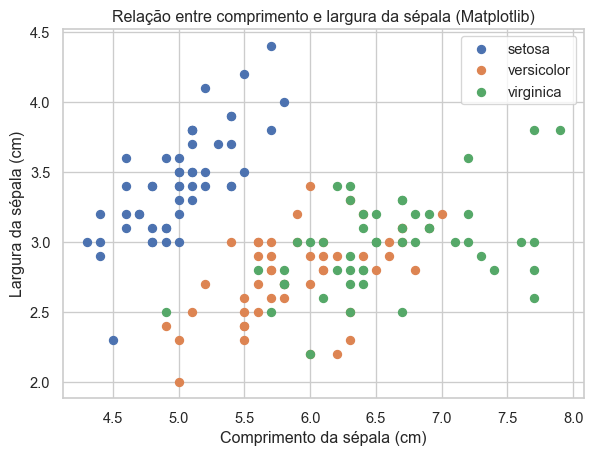
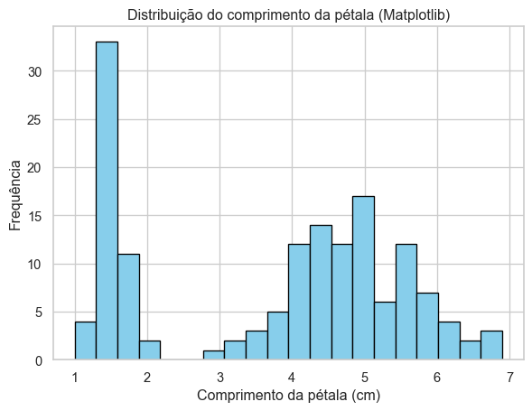
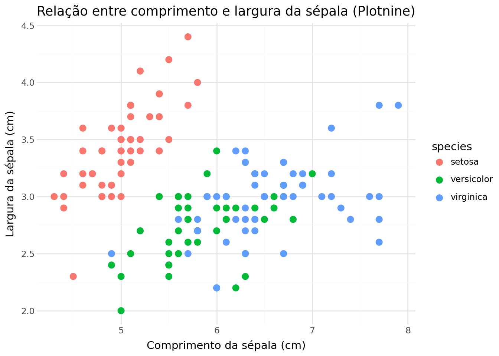
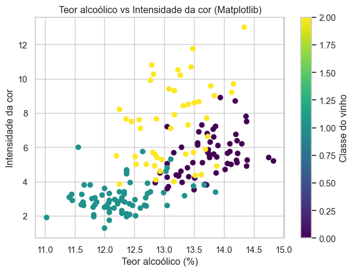
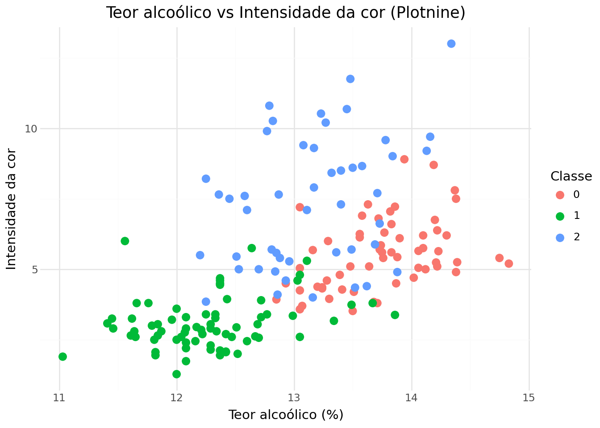

import matplotlib.pyplot as plt
import seaborn as sns
import pandas as pd
from plotnine import ggplot, aes, geom_point, geom_histogram, labs, theme_minimal
from sklearn.datasets import load_wine
sns.set(style="whitegrid")Visualização e Aceleração Computacional em Python
Instalar dependências (execute uma vez) !pip install matplotlib seaborn plotnine numba scikit-learn pandas
Introdução
Neste trabalho, exploramos duas ferramentas essenciais do ecossistema Python voltadas para visualização de dados e aceleração computacional:
- Matplotlib / Plotnine — bibliotecas fundamentais para a criação de gráficos e análise visual de dados.
- Numba — uma biblioteca que permite acelerar código Python através da compilação Just-In-Time (JIT).
A visualização de dados é uma etapa crucial em ciência de dados, permitindo identificar padrões e comunicar resultados de forma eficiente. Já a aceleração computacional é fundamental em tarefas que exigem alto desempenho, como simulações, modelagem estatística e aprendizado de máquina.
Parte 1: Plotagem em Python
Nesta seção, utilizaremos as bibliotecas Matplotlib e Plotnine para gerar visualizações a partir de dois conjuntos de dados:
iris— conjunto clássico com medidas de flores, disponível noseaborn.wine— conjunto de dados dosklearn.datasets, contendo características químicas de vinhos.
1.1 Importação das bibliotecas
1.2 Conjunto de dados iris
iris = sns.load_dataset("iris")
iris.head()| sepal_length | sepal_width | petal_length | petal_width | species | |
|---|---|---|---|---|---|
| 0 | 5.1 | 3.5 | 1.4 | 0.2 | setosa |
| 1 | 4.9 | 3.0 | 1.4 | 0.2 | setosa |
| 2 | 4.7 | 3.2 | 1.3 | 0.2 | setosa |
| 3 | 4.6 | 3.1 | 1.5 | 0.2 | setosa |
| 4 | 5.0 | 3.6 | 1.4 | 0.2 | setosa |
Gráficos com Matplotlib
plt.figure(figsize=(7,5))
for species in iris["species"].unique():
subset = iris[iris["species"] == species]
plt.scatter(subset["sepal_length"], subset["sepal_width"], label=species)
plt.title("Relação entre comprimento e largura da sépala (Matplotlib)")
plt.xlabel("Comprimento da sépala (cm)")
plt.ylabel("Largura da sépala (cm)")
plt.legend()
plt.show()
plt.figure(figsize=(7,5))
plt.hist(iris["petal_length"], bins=20, color="skyblue", edgecolor="black")
plt.title("Distribuição do comprimento da pétala (Matplotlib)")
plt.xlabel("Comprimento da pétala (cm)")
plt.ylabel("Frequência")
plt.show()Gráficos com Plotnine
(
ggplot(iris, aes(x="sepal_length", y="sepal_width", color="species"))
+ geom_point(size=3)
+ labs(title="Relação entre comprimento e largura da sépala (Plotnine)",
x="Comprimento da sépala (cm)", y="Largura da sépala (cm)")
+ theme_minimal()
)
(
ggplot(iris, aes(x="petal_length", fill="species"))
+ geom_histogram(bins=20, color="black", alpha=0.6, position="identity")
+ labs(title="Distribuição do comprimento da pétala (Plotnine)",
x="Comprimento da pétala (cm)", y="Frequência")
+ theme_minimal()
)
1.3 Conjunto de dados wine
wine = load_wine(as_frame=True)
df_wine = wine.frame
df_wine.head()| alcohol | malic_acid | ash | alcalinity_of_ash | magnesium | total_phenols | flavanoids | nonflavanoid_phenols | proanthocyanins | color_intensity | hue | od280/od315_of_diluted_wines | proline | target | |
|---|---|---|---|---|---|---|---|---|---|---|---|---|---|---|
| 0 | 14.23 | 1.71 | 2.43 | 15.6 | 127.0 | 2.80 | 3.06 | 0.28 | 2.29 | 5.64 | 1.04 | 3.92 | 1065.0 | 0 |
| 1 | 13.20 | 1.78 | 2.14 | 11.2 | 100.0 | 2.65 | 2.76 | 0.26 | 1.28 | 4.38 | 1.05 | 3.40 | 1050.0 | 0 |
| 2 | 13.16 | 2.36 | 2.67 | 18.6 | 101.0 | 2.80 | 3.24 | 0.30 | 2.81 | 5.68 | 1.03 | 3.17 | 1185.0 | 0 |
| 3 | 14.37 | 1.95 | 2.50 | 16.8 | 113.0 | 3.85 | 3.49 | 0.24 | 2.18 | 7.80 | 0.86 | 3.45 | 1480.0 | 0 |
| 4 | 13.24 | 2.59 | 2.87 | 21.0 | 118.0 | 2.80 | 2.69 | 0.39 | 1.82 | 4.32 | 1.04 | 2.93 | 735.0 | 0 |
Gráfico comparando duas variáveis
plt.figure(figsize=(7,5))
plt.scatter(df_wine["alcohol"], df_wine["color_intensity"], c=df_wine["target"], cmap="viridis")
plt.title("Teor alcoólico vs Intensidade da cor (Matplotlib)")
plt.xlabel("Teor alcoólico (%)")
plt.ylabel("Intensidade da cor")
plt.colorbar(label="Classe do vinho")
plt.show()
Versão equivalente com Plotnine
(
ggplot(df_wine, aes(x="alcohol", y="color_intensity", color="factor(target)"))
+ geom_point(size=3)
+ labs(title="Teor alcoólico vs Intensidade da cor (Plotnine)",
x="Teor alcoólico (%)", y="Intensidade da cor", color="Classe")
+ theme_minimal()
)
Comentários sobre as diferenças
- Matplotlib fornece controle total sobre os elementos gráficos, mas exige mais código e ajustes manuais.
- Plotnine, inspirado no
ggplot2do R, utiliza uma sintaxe declarativa (baseada em camadas), tornando o código mais legível e elegante.
- Ambas são amplamente utilizadas em ciência de dados, dependendo do estilo e complexidade desejados.
Parte 2: Numba
Nesta parte, implementaremos a aproximação de π (pi) pelo método de Monte Carlo — uma técnica estatística que estima valores por meio de simulações aleatórias.
A seguir, implementamos duas versões: 1. Versão em Python puro 2. Versão acelerada com Numba
2.1 Importação e função em Python puro
import numpy as np
import time
def monte_carlo_pi(n_samples: int) -> float:
x = np.random.rand(n_samples)
y = np.random.rand(n_samples)
inside = np.sum(x**2 + y**2 <= 1)
return (4 * inside) / n_samples
# Teste e tempo de execução
N = 10_000_000
start = time.time()
pi_estimate = monte_carlo_pi(N)
end = time.time()
print(f"Estimativa de π (Python puro): {pi_estimate}")
print(f"Tempo de execução: {end - start:.4f} segundos")Estimativa de π (Python puro): 3.141066
Tempo de execução: 0.2455 segundos2.2 Versão acelerada com Numba
from numba import njit
@njit
def monte_carlo_pi_numba(n_samples: int) -> float:
count = 0
for _ in range(n_samples):
x = np.random.rand()
y = np.random.rand()
if x**2 + y**2 <= 1:
count += 1
return 4 * count / n_samples
# Teste e tempo de execução
start = time.time()
pi_estimate_numba = monte_carlo_pi_numba(N)
end = time.time()
print(f"Estimativa de π (Numba): {pi_estimate_numba}")
print(f"Tempo de execução (com Numba): {end - start:.4f} segundos")Estimativa de π (Numba): 3.141284
Tempo de execução (com Numba): 0.2843 segundos2.3 Comparação de desempenho
# Comparação básica
def compare_performance():
N = 5_000_000
t0 = time.time()
monte_carlo_pi(N)
t1 = time.time()
monte_carlo_pi_numba(N)
t2 = time.time()
print(f"Python puro: {t1 - t0:.4f}s")
print(f"Com Numba: {t2 - t1:.4f}s")
print(f"Aceleração: {(t1 - t0)/(t2 - t1):.2f}x mais rápido")
compare_performance()Python puro: 0.1148s
Com Numba: 0.0801s
Aceleração: 1.43x mais rápidoConclusão
Neste trabalho, exploramos duas ferramentas complementares do ecossistema Python:
- Matplotlib e Plotnine permitem criar visualizações poderosas para análise exploratória de dados, com diferentes paradigmas de uso (imperativo e declarativo).
- Numba oferece aceleração significativa para código numérico em Python, especialmente em simulações e cálculos intensivos.
Essas ferramentas são essenciais em ciência de dados e modelagem, combinando clareza visual e eficiência computacional — um equilíbrio necessário para projetos analíticos e científicos modernos.
Referências
- Numba Documentation — https://numba.pydata.org/
- Matplotlib Documentation — https://matplotlib.org/
- Plotnine Documentation — https://plotnine.org/
- Seaborn Dataset Reference — https://seaborn.pydata.org/